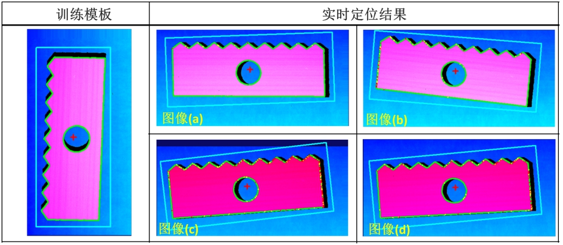
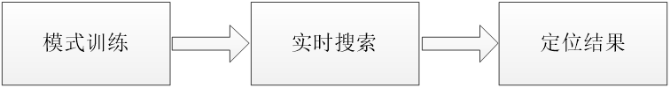
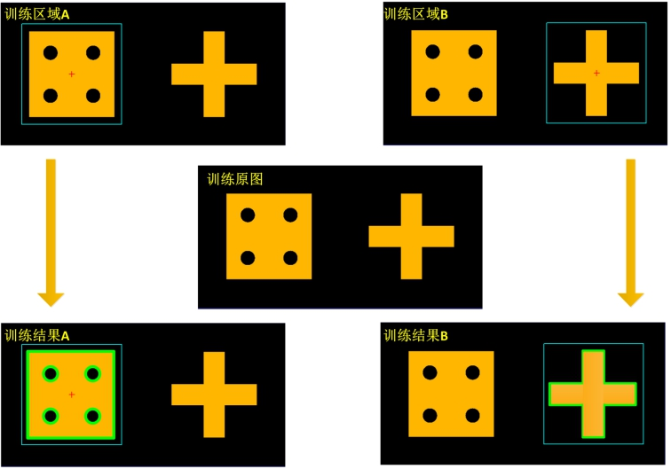

Trong các ứng dụng 3D công nghiệp thực tế, thường cần định vị đối với hình ảnh độ sâu thu được thời gian thực, từ đó thực hiện đo lường hoặc phát hiện chính xác trên vùng ROI chỉ định. Công cụ định vị điểm đám mây có thể thực hiện việc khớp một hoặc nhiều mẫu thời gian thực với mẫu đã huấn luyện trong hình ảnh độ sâu thời gian thực, kết quả định vị bao gồm điểm số khớp, vị trí, góc quay và nhiều thông tin khác.
Hình 1 thể hiện một ví dụ ứng dụng của công cụ định vị điểm đám mây. Mẫu huấn luyện là chi tiết công việc trong hình ảnh độ sâu, tọa độ điểm tham chiếu huấn luyện là (800.00, 1700.00); hình ảnh thời gian thực (a)-(d) là các hình ảnh độ sâu có một mức độ xoay và dịch chuyển nhất định. Từ kết quả định vị thời gian thực trong Hình 1 có thể thấy, công cụ định vị điểm đám mây có hiệu quả định vị tốt đối với bốn hình ảnh từ (a) đến (d).

Dựa trên đặc trưng hình học độ sâu đã huấn luyện, tìm ra vị trí hình học khớp, trả về số lượng kết quả và mảng kết quả.
Công cụ định vị điểm đám mây thông qua huấn luyện mẫu để thu được mô tả đặc trưng hình học của hình ảnh mẫu, đặc trưng hình học có thể thực hiện chính xác và nhanh chóng các phép biến đổi dịch chuyển, xoay, v.v. Công cụ định vị hình ảnh độ sâu sẽ tìm kiếm trong hình ảnh thời gian thực các mẫu đặc trưng hình học cạnh tương tự mẫu huấn luyện, tính toán vị trí của mẫu kết quả trong hình ảnh thời gian thực và góc xoay của nó so với mẫu huấn luyện.
Hình 2 thể hiện sơ đồ luồng tổng thể của công cụ định vị điểm đám mây. Công cụ định vị điểm đám mây trước tiên thực hiện huấn luyện mẫu để thu được đặc trưng mẫu huấn luyện, sau đó qua tìm kiếm thời gian thực để thu được kết quả định vị.

Hình 3 thể hiện sơ đồ huấn luyện mẫu của công cụ định vị điểm đám mây. Trong Hình 3, công cụ định vị điểm đám mây sử dụng ROI trên hình ảnh huấn luyện để chọn đối tượng mục tiêu thực hiện huấn luyện mẫu. Trong quá trình huấn luyện, đối với vùng hình ảnh hiệu quả trong khu vực đã chọn, trích xuất thông tin cạnh, sau khi xử lý thêm sẽ thu được mẫu huấn luyện. Trong Hình 3, khi vùng ROI là vùng huấn luyện A thì kết quả huấn luyện thu được là kết quả huấn luyện A; khi vùng ROI là vùng huấn luyện B thì kết quả huấn luyện thu được là kết quả huấn luyện B. Hiện tại, công cụ định vị điểm đám mây chỉ hỗ trợ huấn luyện một mẫu duy nhất, chưa hỗ trợ huấn luyện nhiều mẫu.

Công cụ định vị thực hiện tìm kiếm thời gian thực trong không gian tìm kiếm gồm một hoặc nhiều bậc tự do mà người dùng thiết lập. Do hình ảnh độ sâu thể hiện thông tin kích thước thực của vật thể được quét, vì vậy hiện tại không gian tìm kiếm bậc tự do của công cụ định vị điểm đám mây chỉ hỗ trợ bậc tự do dịch chuyển và bậc tự do xoay, không hỗ trợ các bậc tự do liên quan đến tỷ lệ phóng to/thu nhỏ. Trong ứng dụng thực tế, phạm vi bậc tự do được thiết lập nên gần với phạm vi bậc tự do tối đa có thể xuất hiện, nhằm giảm thời gian xử lý của công cụ do tìm kiếm trong phạm vi không cần thiết.
Quy trình thực thi công cụ: Cấu hình đầu vào → Thiết lập thuộc tính → Huấn luyện hình ảnh → Thực hiện tìm kiếm.
Nhấp đúp vào công cụ, trong cửa sổ bật lên cấu hình hình ảnh đầu vào, như Hình 4
Thiết lập thanh thuộc tính như Hình 5, chuột phải vào công cụ → Thuộc tính → Mở giao diện nâng cao như Hình 6


Chuột phải vào công cụ → Thuộc tính → Mở giao diện nâng cao → Tab Tham số huấn luyện, như Hình 7;

（1）Trước tiên chọn nguồn “Hình ảnh huấn luyện”:
a. “Hình ảnh đầu vào”: hình ảnh huấn luyện được lấy từ chuỗi tham số “Hình ảnh đầu vào”;
b. “Tải hình ảnh”: hình ảnh huấn luyện được tải từ file ngoại tuyến;
（2）Nhấp “Lấy hình ảnh huấn luyện”: cập nhật hình ảnh huấn luyện, sau khi nhấp sẽ hiện hộp thoại xác nhận;
（3）Nhấp “Thực hiện huấn luyện mẫu”: tiến hành huấn luyện;
Theo các tham số tìm kiếm và tham số đánh giá kết quả đã thiết lập để trả về kết quả tìm kiếm tương ứng, như Hình 8;

Không có
| Phân loại | Tên tham số | Mô tả tham số |
|---|---|---|
| Cửa sổ thuộc tính | Có bật tìm kiếm toàn ảnh không | Công tắc bật/tắt tìm kiếm toàn ảnh. Khi chọn “Có”, toàn bộ ảnh thu thập thời gian thực là phạm vi tìm kiếm của công cụ; khi chọn “Không”, vùng ROI hình chữ nhật trong Edit view là phạm vi tìm kiếm. Vùng tìm kiếm phải lớn hơn vùng huấn luyện. |
| Có cho phép nhập vùng tìm kiếm từ bên ngoài không | Khi bật, có thể liên kết vùng tìm kiếm qua hộp thoại chỉnh sửa chuỗi tham số, nhập vùng tìm kiếm từ bên ngoài. | |
| Vùng tìm kiếm | Khi “Có bật tìm kiếm toàn ảnh không” chọn “Không”, vùng ROI hình chữ nhật trong Edit view là phạm vi tìm kiếm của công cụ. Vùng tìm kiếm phải lớn hơn vùng huấn luyện. | |
| Chế độ tìm kiếm | Bao gồm ba dạng: Nhanh, Độ chính xác cao, Độ chính xác cao + Ổn định; thời gian xử lý tăng dần, độ chính xác tăng dần. | |
| Số lượng tìm kiếm | Thiết lập số lượng kết quả tìm kiếm tối đa. | |
| Ngưỡng chấp nhận | Giữa mẫu huấn luyện và kết quả tìm kiếm thời gian thực có một điểm số mức độ khớp, khi điểm số khớp cao hơn ngưỡng chấp nhận thì coi như tìm kiếm thời gian thực thành công. Phạm vi giá trị (0,1]. | |
| Có sử dụng ngưỡng chấp nhận khớp thô không | Chọn “Có” thì sẽ hiển thị tham số ngưỡng chấp nhận khớp thô. | |
| Ngưỡng chấp nhận khớp thô | Ngưỡng chấp nhận khớp thô là yêu cầu điểm đánh giá tối thiểu đối với kết quả định vị thô. Kết quả định vị thô có điểm thấp hơn ngưỡng này sẽ bị coi là khớp không hợp lệ và không được đưa vào quá trình khớp tinh; ngược lại sẽ được đưa vào khớp tinh. | |
| Góc thấp nhất/cao nhất tìm kiếm | Phạm vi góc tìm kiếm, góc thấp nhất ≥ -360°, góc cao nhất ≤ 360°, góc thấp nhất < góc cao nhất. | |
| Phạm vi góc tìm kiếm | Khi tìm kiếm thời gian thực, ngưỡng trên của chênh lệch góc xoay để coi nhiều kết quả định vị khác nhau nhưng cùng vị trí là một kết quả duy nhất. Ngưỡng này chủ yếu dùng để lọc bỏ các kết quả khớp có cùng thông tin vị trí nhưng góc xoay khác nhau. Khi tọa độ X và Y giống nhau hoàn toàn, sẽ xóa các kết quả có chênh lệch góc xoay nằm trong phạm vi này, cuối cùng chỉ giữ lại kết quả có điểm số cao nhất. Phạm vi giá trị [0,360], hỗ trợ số thập phân, thông thường để mặc định 360 độ là được. | |
| Ngưỡng độ tương phản | Ngưỡng độ tương phản là giá trị nhỏ nhất của độ tương phản mà kết quả định vị cuối cùng có thể chấp nhận, trong đó độ tương phản của kết quả định vị là giá trị trung vị của biên độ gradient của tất cả các điểm biên đặc trưng mẫu. Kết quả có độ tương phản thấp hơn ngưỡng này là khớp không hợp lệ, ngược lại là hợp lệ. Phạm vi giá trị (0, 255]. | |
| Ngưỡng tỷ lệ chồng lấp | Ngưỡng tỷ lệ chồng lấp là giá trị giới hạn dưới mà tỷ lệ chồng lấp cần đạt được để coi hai kết quả định vị có phần chồng lấp là một kết quả duy nhất. Kết quả có tỷ lệ chồng lấp cao hơn ngưỡng này sẽ bị coi là kết quả trùng lặp (không hợp lệ), ngược lại là hợp lệ. Ngưỡng này không khả dụng ở thuật toán nhanh. Phạm vi giá trị (0,1]. | |
| Ngưỡng nhiễu loạn (混叠阈值) | Phản ánh số lượng đặc trưng không có trong mẫu huấn luyện nhưng lại được tìm thấy trong kết quả định vị thời gian thực (đặc trưng thừa). Càng nhiều điểm nhiễu loạn thì giá trị nhiễu loạn càng cao. Phạm vi giá trị -1 hoặc [0,100], mặc định -1 (không bật). | |
| Ngưỡng sai số khớp | Trong quá trình tìm kiếm thời gian thực, giá trị lớn nhất của sai số RMS (phương pháp bình phương tối thiểu) có thể chấp nhận được khi giải kết quả định vị. Sai số khớp phản ánh mức độ khác biệt giữa mẫu huấn luyện và kết quả định vị thời gian thực. Kết quả vượt ngưỡng là không hợp lệ, thấp hơn ngưỡng là hợp lệ. Phạm vi giá trị -1 hoặc [0,100], mặc định -1 (không bật), ngưỡng này không khả dụng ở thuật toán nhanh. | |
| Có sử dụng ngưỡng nhiễu thời gian thực không | Chọn “Có” thì bật các tham số “Tự động xác định ngưỡng nhiễu” và “Ngưỡng nhiễu”. | |
| Tự động xác định ngưỡng nhiễu | Chọn “Có” thì thuật toán tự động xác định ngưỡng nhiễu thời gian thực; chọn “Không” thì bật tham số ngưỡng nhiễu. | |
| Ngưỡng nhiễu | Khi tìm kiếm thời gian thực, giá trị biên độ gradient tối thiểu của các điểm cạnh hiệu quả trong ảnh thời gian thực. Các điểm cạnh có biên độ gradient thấp hơn ngưỡng nhiễu thời gian thực sẽ bị coi là điểm nhiễu và bị lọc bỏ. Phạm vi giá trị [0,255]. | |
| Cách sắp xếp kết quả | Sắp xếp kết quả định vị theo cách được chỉ định. Các cách sắp xếp hỗ trợ: X, Y, Score. | |
| Cửa sổ ảnh | Vùng huấn luyện | Hiển thị vùng hình chữ nhật affine tham gia huấn luyện trong ảnh mẫu. Là cùng tham số với “Vùng huấn luyện” trong cửa sổ thuộc tính. |
| Nhập thủ công điểm đánh dấu | Hiển thị điểm đánh dấu, dùng để hỗ trợ định vị. Khi trong cửa sổ thuộc tính chọn “Có nhập thủ công điểm đánh dấu” là “Có” và nhập tọa độ trục X, Y của điểm đánh dấu, điểm đánh dấu trên ảnh sẽ di chuyển đến vị trí tương ứng. | |
| Vùng tìm kiếm | Hiển thị vùng hình chữ nhật tham gia tìm kiếm trên ảnh thời gian thực. Là cùng tham số với “Vùng tìm kiếm” trong cửa sổ thuộc tính. | |
| Chuỗi dữ liệu | Ảnh độ sâu đầu vào | Ảnh dùng để tìm kiếm thời gian thực. |
| Ảnh độ sâu huấn luyện | Ảnh dùng để huấn luyện mẫu. | |
| Vùng tìm kiếm nhập từ bên ngoài | Khi trong cửa sổ thuộc tính chọn “Có cho phép nhập vùng tìm kiếm từ bên ngoài” là “Có” thì tham số này có hiệu lực. Tham số này thường liên kết với kết quả đầu ra của công cụ tạo hình chữ nhật. | |
| Giao diện nâng cao | Bật mask/Thiết lập ảnh mask | Trong quá trình huấn luyện mẫu, che đi vùng không tham gia huấn luyện mẫu, giảm số lượng đặc trưng tham gia huấn luyện mẫu. |
| Chỉnh sửa mẫu hiện tại | Chỉnh sửa thủ công chuỗi đặc trưng của mẫu huấn luyện. | |
| Tải/Lưu (tất cả) mẫu | Hỗ trợ lưu và tải mẫu hiện tại. | |
| Lấy ảnh huấn luyện | Lấy ảnh cần thiết để huấn luyện. | |
| Thực hiện huấn luyện mẫu | Thực hiện huấn luyện mẫu dựa trên ảnh huấn luyện đã lấy được. | |
| Độ hạt (Granularity) | Đo lường kích thước đặc trưng nhỏ nhất có thể phát hiện trong ảnh, là mô tả kích thước đặc trưng ảnh nhỏ nhất cần phát hiện. Phạm vi giá trị [1,16], độ hạt càng lớn thì khoảng cách lấy mẫu càng lớn, kích thước đặc trưng nhỏ nhất trích xuất khi huấn luyện càng lớn. Khi độ hạt tăng, kích thước mục tiêu có thể lấy được đặc trưng tăng lên, số lượng đặc trưng hiệu quả giảm dần. | |
| Độ hạt tinh tế | Độ hạt nhỏ hơn được dùng để phát hiện đặc trưng tinh tế trong quá trình huấn luyện mẫu, phạm vi giá trị [1,16]. Độ hạt tinh tế có thể giữ lại hiệu quả các đặc trưng cạnh của mục tiêu kích thước nhỏ hoặc chi tiết cục bộ của mục tiêu lớn, nâng cao độ chính xác định vị khi tìm kiếm thời gian thực, nhưng có thể làm tăng thời gian định vị. | |
| Ngưỡng nhiễu | Trong quá trình huấn luyện mẫu, giá trị biên độ gradient tối thiểu của các điểm cạnh hiệu quả. Các điểm cạnh có biên độ gradient thấp hơn ngưỡng nhiễu sẽ bị coi là điểm nhiễu và bị lọc bỏ. Phạm vi giá trị [1,255]. | |
| Cường độ cạnh | Trong quá trình huấn luyện mẫu, giá trị nhỏ nhất của tổng biên độ gradient của chuỗi đặc trưng cạnh hiệu quả (gồm nhiều điểm cạnh hiệu quả). Các chuỗi ngắn và chuỗi dài có biên độ yếu có tổng biên độ gradient thấp hơn ngưỡng cường độ cạnh sẽ bị lọc bỏ, phạm vi giá trị [1, 5000000]. | |
| Vùng huấn luyện | Vùng hình chữ nhật affine tham gia huấn luyện trong ảnh mẫu. | |
| Điểm đánh dấu huấn luyện | Điểm đánh dấu dùng để hỗ trợ định vị. Khi trong cửa sổ thuộc tính chọn “Có nhập thủ công điểm đánh dấu” là “Có” và nhập tọa độ trục X, Y của điểm đánh dấu, điểm đánh dấu trên ảnh sẽ di chuyển đến vị trí tương ứng. | |
| Điểm đánh dấu trung tâm | Đặt điểm đánh dấu vào trung tâm vùng huấn luyện. | |
| Điều khiển hiển thị | Điều khiển việc hiển thị điểm hỗ trợ hoặc đặc trưng, bao gồm hiển thị đặc trưng thô hoặc đặc trưng tinh tế. | |
| Chế độ tìm kiếm | Bao gồm ba dạng: Nhanh, Độ chính xác cao, Độ chính xác cao + Ổn định; thời gian xử lý tăng dần, độ chính xác tăng dần. | |
| Số lượng tìm kiếm | Thiết lập số lượng kết quả tìm kiếm tối đa. | |
| Ngưỡng chấp nhận | Giữa mẫu huấn luyện và kết quả tìm kiếm thời gian thực có một điểm số mức độ khớp, khi điểm số khớp cao hơn ngưỡng chấp nhận thì coi như tìm kiếm thời gian thực thành công. Phạm vi giá trị (0,1]. | |
| Có sử dụng ngưỡng chấp nhận khớp thô không | Chọn “Có” thì sẽ hiển thị tham số ngưỡng chấp nhận khớp thô. | |
| Ngưỡng chấp nhận khớp thô | Ngưỡng chấp nhận khớp thô là yêu cầu điểm đánh giá tối thiểu đối với kết quả định vị thô. Kết quả định vị thô có điểm thấp hơn ngưỡng này sẽ bị coi là khớp không hợp lệ và không được đưa vào quá trình khớp tinh; ngược lại sẽ được đưa vào khớp tinh. | |
| Tìm kiếm toàn ảnh | Khi chọn “Có”, toàn bộ ảnh thu thập thời gian thực là phạm vi tìm kiếm; khi chọn “Không”, vùng hình chữ nhật affine trong view “Vùng tìm kiếm” là phạm vi tìm kiếm. Vùng tìm kiếm phải lớn hơn vùng huấn luyện. Tương đương với tham số “Có bật tìm kiếm toàn ảnh không” trong giao diện thuộc tính. | |
| Tải/Lưu tham số | Hỗ trợ lưu và tải các tham số tìm kiếm. | |
| Góc thấp nhất/cao nhất tìm kiếm | Phạm vi góc tìm kiếm, góc thấp nhất ≥ -360°, góc cao nhất ≤ 360°, góc thấp nhất < góc cao nhất. | |
| Phạm vi góc tìm kiếm | Khi tìm kiếm thời gian thực, ngưỡng trên của chênh lệch góc xoay để coi nhiều kết quả định vị khác nhau nhưng cùng vị trí là một kết quả duy nhất. Ngưỡng này chủ yếu dùng để lọc bỏ các kết quả khớp có cùng thông tin vị trí nhưng góc xoay khác nhau. Khi tọa độ X và Y giống nhau hoàn toàn, sẽ xóa các kết quả có chênh lệch góc xoay nằm trong phạm vi này, cuối cùng chỉ giữ lại kết quả có điểm số cao nhất. Phạm vi giá trị [0,360], hỗ trợ số thập phân, thông thường để mặc định 360 độ là được. | |
| Ngưỡng độ tương phản | Ngưỡng độ tương phản là giá trị nhỏ nhất của độ tương phản mà kết quả định vị cuối cùng có thể chấp nhận, trong đó độ tương phản của kết quả định vị là giá trị trung vị của biên độ gradient của tất cả các điểm biên đặc trưng mẫu. Kết quả có độ tương phản thấp hơn ngưỡng này là khớp không hợp lệ, ngược lại là hợp lệ. Phạm vi giá trị (0, 255]. | |
| Ngưỡng tỷ lệ chồng lấp | Ngưỡng tỷ lệ chồng lấp là giá trị giới hạn dưới mà tỷ lệ chồng lấp cần đạt được để coi hai kết quả định vị có phần chồng lấp là một kết quả duy nhất. Kết quả có tỷ lệ chồng lấp cao hơn ngưỡng này sẽ bị coi là kết quả trùng lặp (không hợp lệ), ngược lại là hợp lệ. Ngưỡng này không khả dụng ở thuật toán nhanh. Phạm vi giá trị (0,1]. | |
| Ngưỡng nhiễu loạn | Phản ánh số lượng đặc trưng không có trong mẫu huấn luyện nhưng lại được tìm thấy trong kết quả định vị thời gian thực (đặc trưng thừa). Càng nhiều điểm nhiễu loạn thì giá trị nhiễu loạn càng cao. Phạm vi giá trị -1 hoặc [0,100], mặc định -1 (không bật). | |
| Ngưỡng sai số khớp | Trong quá trình tìm kiếm thời gian thực, giá trị lớn nhất của sai số RMS (phương pháp bình phương tối thiểu) có thể chấp nhận được khi giải kết quả định vị. Sai số khớp phản ánh mức độ khác biệt giữa mẫu huấn luyện và kết quả định vị thời gian thực. Kết quả vượt ngưỡng là không hợp lệ, thấp hơn ngưỡng là hợp lệ. Phạm vi giá trị -1 hoặc [0,100], mặc định -1 (không bật), ngưỡng này không khả dụng ở thuật toán nhanh. | |
| Có sử dụng ngưỡng nhiễu thời gian thực không | Chọn “Có” thì bật các tham số “Tự động xác định ngưỡng nhiễu” và “Ngưỡng nhiễu”. | |
| Tự động xác định ngưỡng nhiễu | Chọn “Có” thì thuật toán tự động xác định ngưỡng nhiễu thời gian thực; chọn “Không” thì bật tham số ngưỡng nhiễu. | |
| Ngưỡng nhiễu | Khi tìm kiếm thời gian thực, giá trị biên độ gradient tối thiểu của các điểm cạnh hiệu quả trong ảnh thời gian thực. Các điểm cạnh có biên độ gradient thấp hơn ngưỡng nhiễu thời gian thực sẽ bị coi là điểm nhiễu và bị lọc bỏ. Phạm vi giá trị [0,255]. | |
| Thực hiện tìm kiếm | Trên cơ sở đã huấn luyện mẫu, thực hiện một lần tìm kiếm. | |
| Hiển thị vị trí kết quả | Điều khiển hiển thị điểm đánh dấu huấn luyện trên ảnh thời gian thực. | |
| Hiển thị vùng kết quả | Điều khiển hiển thị vùng huấn luyện trên ảnh thời gian thực. | |
| Hiển thị điểm hỗ trợ kết quả | Điều khiển hiển thị điểm đánh dấu huấn luyện trên ảnh thời gian thực. | |
| Hiển thị đặc trưng tham chiếu | Điều khiển hiển thị đặc trưng huấn luyện trên ảnh thời gian thực. | |
| Giới hạn trên số lượng kết quả | Thiết lập giới hạn trên số lượng kết quả, mặc định là “——” (không kiểm tra), phạm vi kiểm tra có thể đặt [0, 5000] và lớn hơn giới hạn dưới, khi số lượng kết quả vượt quá giới hạn trên thì thực thi thất bại. | |
| Giới hạn dưới số lượng kết quả | Thiết lập giới hạn dưới số lượng kết quả, mặc định là “——” (không kiểm tra), phạm vi kiểm tra có thể đặt [0, 5000] và nhỏ hơn giới hạn trên, khi số lượng kết quả nhỏ hơn giới hạn dưới thì thực thi thất bại. | |
| Giới hạn trên vị trí X kết quả | Thiết lập giới hạn trên vị trí X của kết quả, mặc định “-.——” (không kiểm tra), phạm vi kiểm tra có thể đặt [0, 100000] và lớn hơn giới hạn dưới, khi vị trí X của kết quả vượt quá giới hạn trên thì thực thi thất bại. | |
| Giới hạn dưới vị trí X kết quả | Thiết lập giới hạn dưới vị trí X của kết quả, mặc định “-.——” (không kiểm tra), phạm vi kiểm tra có thể đặt [0, 100000] và nhỏ hơn giới hạn trên, khi vị trí X của kết quả nhỏ hơn giới hạn dưới thì thực thi thất bại. | |
| Giới hạn trên vị trí Y kết quả | Thiết lập giới hạn trên vị trí Y của kết quả, mặc định “-.——” (không kiểm tra), phạm vi kiểm tra có thể đặt [0, 100000] và lớn hơn giới hạn dưới, khi vị trí Y của kết quả vượt quá giới hạn trên thì thực thi thất bại. | |
| Giới hạn dưới vị trí Y kết quả | Thiết lập giới hạn dưới vị trí Y của kết quả, mặc định “-.——” (không kiểm tra), phạm vi kiểm tra có thể đặt [0, 100000] và nhỏ hơn giới hạn trên, khi vị trí Y của kết quả nhỏ hơn giới hạn dưới thì thực thi thất bại. | |
| Giới hạn trên góc kết quả | Thiết lập giới hạn trên góc của kết quả, mặc định “-.——” (không kiểm tra), phạm vi kiểm tra có thể đặt [-360, 360] và lớn hơn giới hạn dưới, khi góc kết quả vượt quá giới hạn trên thì thực thi thất bại. | |
| Giới hạn dưới góc kết quả | Thiết lập giới hạn dưới góc của kết quả, mặc định “-.——” (không kiểm tra), phạm vi kiểm tra có thể đặt [-360, 360] và nhỏ hơn giới hạn trên, khi góc kết quả nhỏ hơn giới hạn dưới thì thực thi thất bại. | |
| Giới hạn trên điểm số kết quả | Thiết lập giới hạn trên điểm số của kết quả, mặc định “-.——” (không kiểm tra), phạm vi kiểm tra có thể đặt [0, 1] và lớn hơn giới hạn dưới, khi điểm số kết quả vượt quá giới hạn trên thì thực thi thất bại. | |
| Giới hạn dưới điểm số kết quả | Thiết lập giới hạn dưới điểm số của kết quả, mặc định “-.——” (không kiểm tra), phạm vi kiểm tra có thể đặt [0, 1] và nhỏ hơn giới hạn trên, khi điểm số kết quả nhỏ hơn giới hạn dưới thì thực thi thất bại. |
| Phân loại | Tên tham số | Mô tả tham số |
|---|---|---|
| Cửa sổ giám sát | Ảnh độ sâu đầu vào | Chiều rộng, chiều cao ảnh đầu vào và kích thước pixel. |
| Điểm đánh dấu | Điểm đánh dấu dùng để hỗ trợ định vị. | |
| Điểm đánh dấu huấn luyện | Điểm đánh dấu dùng để hỗ trợ định vị. | |
| Số lượng kết quả | Số lượng kết quả tìm kiếm. | |
| Mảng kết quả tìm kiếm | Mảng gồm các kết quả tìm kiếm. | |
| Biến đổi tuyến tính 2D | Biến đổi tuyến tính 2D mà công cụ này xuất ra là nhóm giá trị đầu tiên trong mảng biến đổi tuyến tính 2D. | |
| Mảng biến đổi tuyến tính 2D | Biến đổi tuyến tính 2D là phép biến đổi dịch chuyển, xoay, phóng to/thu nhỏ của mục tiêu so với mẫu. Mảng biến đổi tuyến tính 2D là mảng gồm tất cả các biến đổi tuyến tính 2D sau khi công cụ thực thi xong một lần. | |
| Tọa độ tìm kiếm | Tọa độ tìm kiếm mà công cụ này xuất ra là nhóm giá trị đầu tiên trong mảng tọa độ tìm kiếm. Nó tương ứng với cùng một kết quả tìm kiếm với biến đổi tuyến tính 2D đầu ra. | |
| Mảng tọa độ tìm kiếm | Tọa độ tìm kiếm là tọa độ kết quả tìm kiếm thời gian thực của điểm đánh dấu, mảng tọa độ tìm kiếm là mảng gồm tất cả các điểm đánh dấu tìm kiếm sau khi công cụ thực thi xong một lần. | |
| Kết quả thực thi | Kết quả thực thi của công cụ. | |
| Thời gian thực thi | Thời gian thực thi của công cụ. | |
| Cửa sổ ảnh | Vị trí tìm kiếm | Vùng tìm kiếm trong mẫu hiển thị trên ảnh tìm kiếm thời gian thực. |
| Tọa độ tìm kiếm | Tọa độ tìm kiếm là tọa độ kết quả tìm kiếm thời gian thực của điểm đánh dấu, cùng tham số với “Tọa độ tìm kiếm” trong cửa sổ giám sát. | |
| Điểm đánh dấu | Điểm đánh dấu dùng để hỗ trợ định vị. | |
| Kết quả thực thi | Hiển thị kết quả thực thi công cụ, thành công hiển thị “OK”, thất bại hiển thị “NG”, cùng tham số kết quả thực thi trong cửa sổ giám sát. | |
| Chuỗi dữ liệu | Ảnh độ sâu đầu vào | Ảnh dùng để tìm kiếm thời gian thực. Cùng tham số với “Ảnh đầu vào” trong cửa sổ giám sát. |
| Ảnh huấn luyện | Ảnh dùng để huấn luyện mẫu. Là cùng một tham số với “Ảnh huấn luyện” trong phần “Chuỗi dữ liệu” của chương “Tham số”. | |
| Tọa độ điểm đánh dấu huấn luyện | Điểm đánh dấu dùng để hỗ trợ định vị. | |
| Mảng kết quả tìm kiếm | Toàn bộ thông tin kết quả thỏa mãn điều kiện đã thiết lập trước. Cùng tham số với “Mảng kết quả tìm kiếm” trong cửa sổ giám sát. | |
| Mảng tọa độ tìm kiếm | Tọa độ tìm kiếm là tọa độ kết quả tìm kiếm thời gian thực của điểm đánh dấu, mảng tọa độ tìm kiếm là mảng gồm tất cả các điểm đánh dấu tìm kiếm sau khi công cụ thực thi xong một lần. Cùng tham số với “Mảng tọa độ tìm kiếm” trong cửa sổ giám sát. | |
| Mảng biến đổi tuyến tính 2D | Biến đổi tuyến tính 2D là phép biến đổi dịch chuyển, xoay, phóng to/thu nhỏ của mục tiêu so với mẫu. Mảng biến đổi tuyến tính 2D là mảng gồm tất cả các biến đổi tuyến tính 2D sau khi công cụ thực thi xong một lần. Là cùng tham số với “Mảng biến đổi tuyến tính 2D” trong cửa sổ giám sát. | |
| Biến đổi tuyến tính 2D | Biến đổi tuyến tính 2D mà công cụ này xuất ra là nhóm giá trị đầu tiên trong mảng biến đổi tuyến tính 2D. Là cùng tham số với “Biến đổi tuyến tính 2D” trong cửa sổ giám sát. | |
| Tọa độ tìm kiếm | Tọa độ tìm kiếm mà công cụ này xuất ra là nhóm giá trị đầu tiên trong mảng tọa độ tìm kiếm. Nó tương ứng với cùng một kết quả tìm kiếm với biến đổi tuyến tính 2D đầu ra. Là cùng tham số với “Tọa độ tìm kiếm” trong cửa sổ giám sát. |
参见“\Samples\3D\深度图\3D测量工具.gvp”。